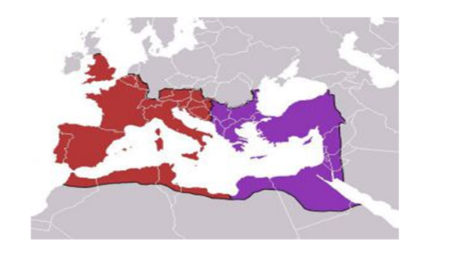
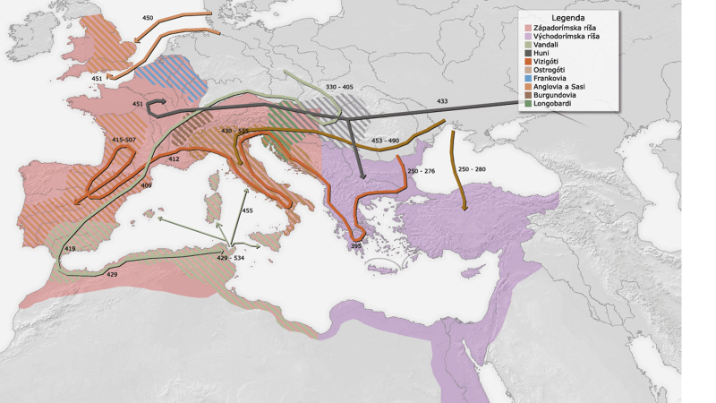

|
Principát / princeps inter pares – prvý medzi rovnými / |
Dominát / Dominus et deus – Pán a boh / |
princíp vlády |
forma vlády, keď panovník je považovaný za prvého medzi rovnými, navonok zachováva úrady republiky senát vlastné
cisárske úrady a postupne na seba kladie všetky
funkcie |
cisár - neobmedzeným vládcom. Jeho moc neobmedzovala žiadna inštitúcia, dokonca ani senát, preto Rím prestal byť hlavným sídelným mestom cisárov. Panovník bol najvyšším veliteľom vojska, jediným zákonodarcom a najvyšším sudcom Dominát sa začína nástupom Diocleciána- 284 Množstvo reforiem |
najvýznamnejší cisári : |
Vespasian, Titus, Domitiánus
Traján, Hadrián, Marcus Aurélius
|
Konštantín Veľký /306 – 337/ - Milánsky edikt 313 https://www.youtube.com/watch?v=tOiHoB-fenI od 5.min Theodosius : 395 – rozdelenie ríše
 |
Reformy na posilnenie ríše |
Reformy : Gaius Octavianus Augustus IMPERATOR CAESAR AUGUSTUS https://www.youtube.com/watch?v=QAewexUPj7A
|
Reformy : Dioclecián https://www.youtube.com/watch?v=UszGO2pE4gk Reformy – cieľ obnovenie Impéria a posilnenie moci cisára
|
Kríza : príčiny – dôsledky |
https://www.youtube.com/watch?v=ii48SAP-W8E
|
https://www.youtube.com/watch?v=tOiHoB-fenI od 6. min. |
|
|
sťahovanie národov :
 |